Mitten im Festlärm ein leiser, dringlicher Moment zu zweit. Maria beugt sich zu Jesus, Hand an seinem Unterarm, besorgt; Jesus sitzt am niedrigen Tisch und wendet ihr das Gesicht zu, ruhig und nachdenklich. Daneben ein umgekippter, leerer Weinkrug und leere Becher. Hinten verschwommen die feiernden Gäste. Warmes Öllampenlicht von links, kühles Mondlicht aus dem Hof. Kamera auf Sitzhöhe, halbnah, geringe Schärfentiefe.
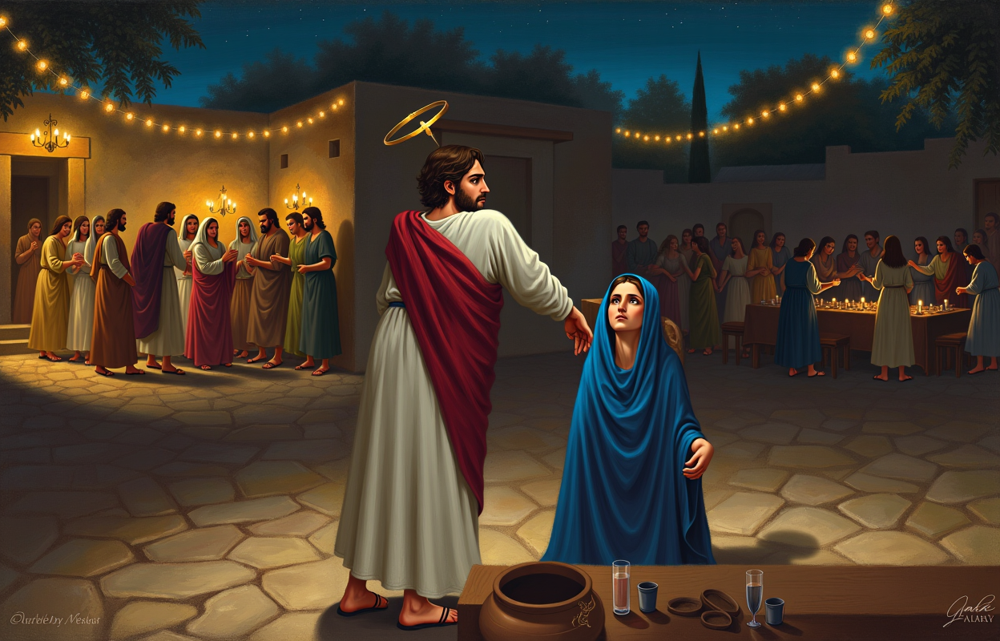
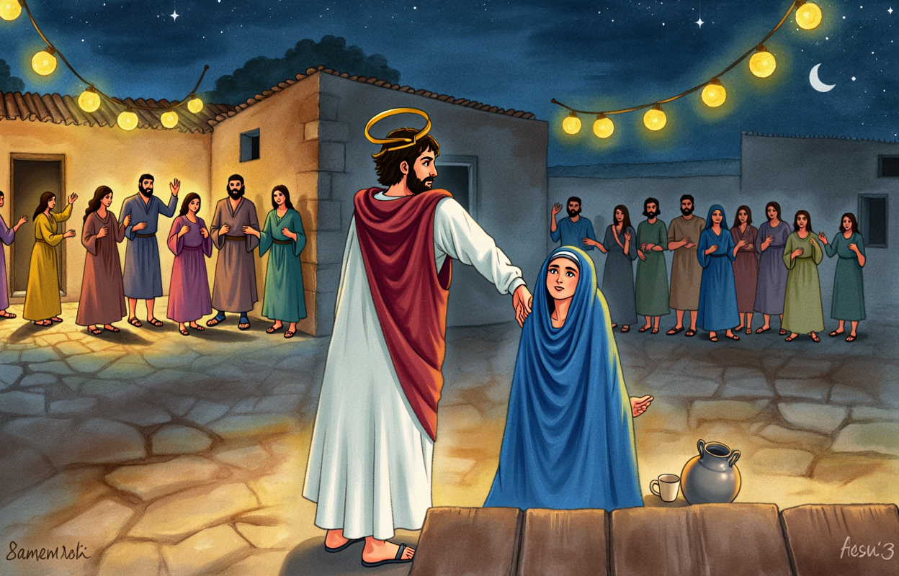
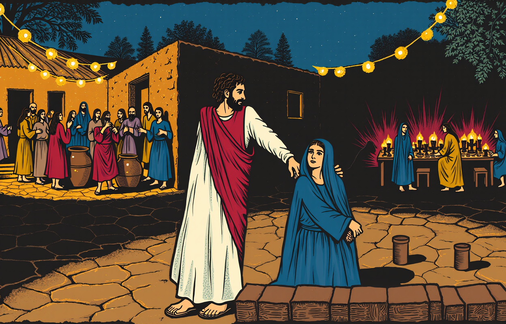
Sechs grosse steinerne Wasserkrüge (Joh 2,6: steinern, je zwei bis drei Mass – deutlich grösser und schwerer als ein Tonkrug) stehen schräg in die Tiefe. Diener giessen Wasser bis an den Rand, das Wasser glänzt. Jesus steht seitlich und gibt mit ruhiger Geste die Anweisung; Maria im Türrahmen hinten schaut zu. Niedrige Kamera, starke Diagonale.
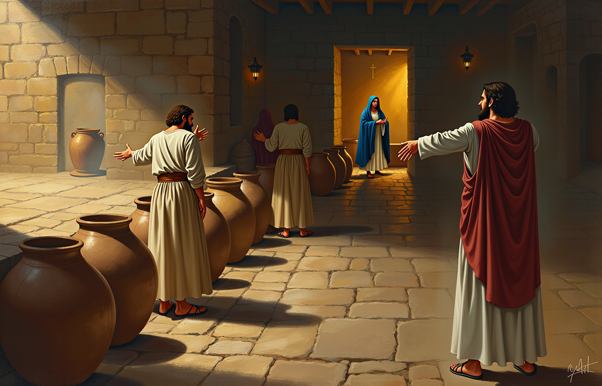
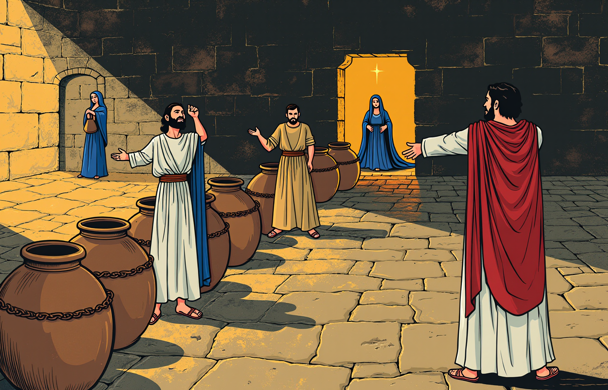
Der Speisemeister hebt den Becher, staunend und erfreut, und wendet sich zum Bräutigam, der verlegen lächelt. Der Wein im Becher fängt das Licht. Hinten tauschen die Diener wissende Blicke; Jesus mit den Jüngern am Bildrand, von den Gästen unbeachtet, sein Gesicht im milden Licht, mit stiller Freude. Die Freude ist laut, das Geheimnis leise.
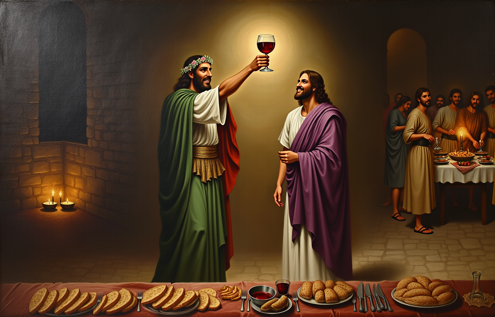
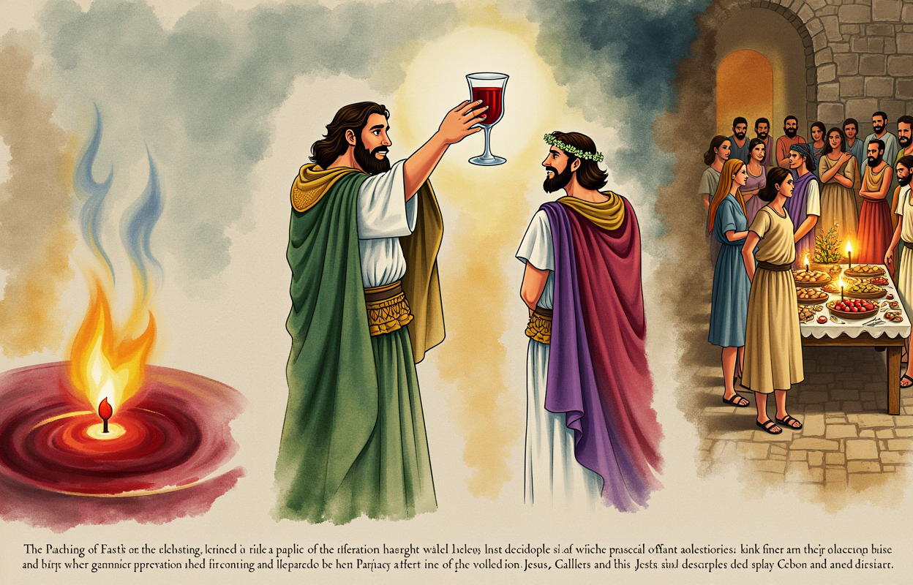
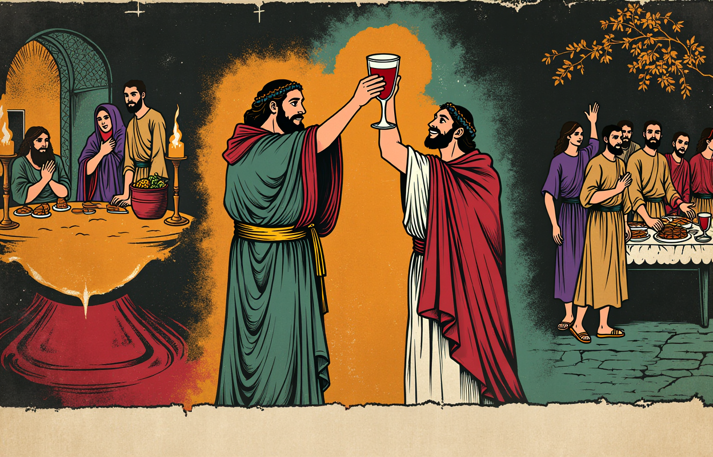
Vorhof des Tempels, mächtige Säulenhalle, Lichtbahnen durch Staub. Jesus mitten in der Bewegung: Geissel aus Stricken erhoben (er schlägt niemanden), mit der anderen Hand stösst er einen Wechseltisch um; Münzen fliegen, Tauben flattern auf, Schafe und Rinder drängen davon, die Händler weichen erschrocken zurück. Untersicht, starke Diagonale. Eifer, nicht Grausamkeit.
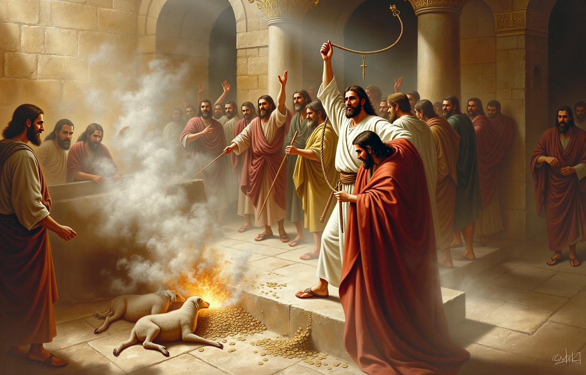
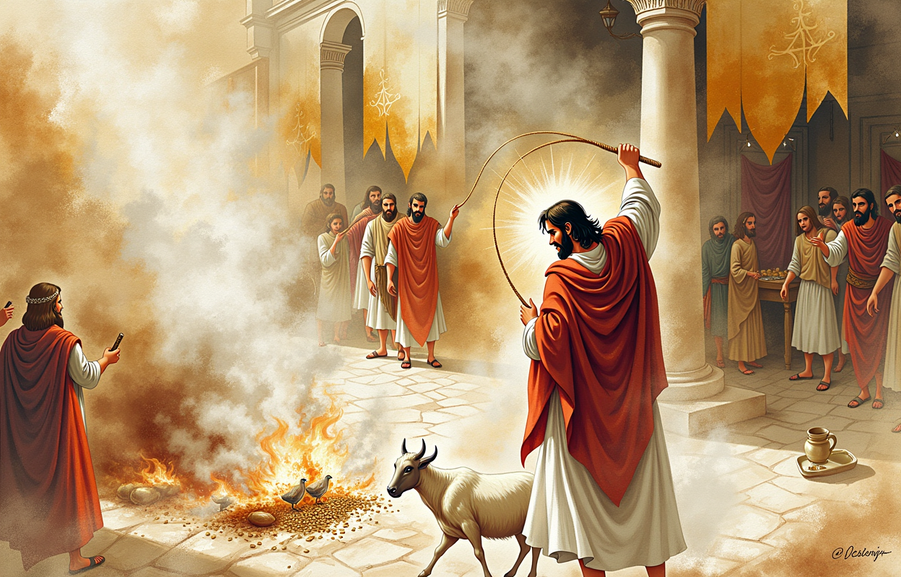
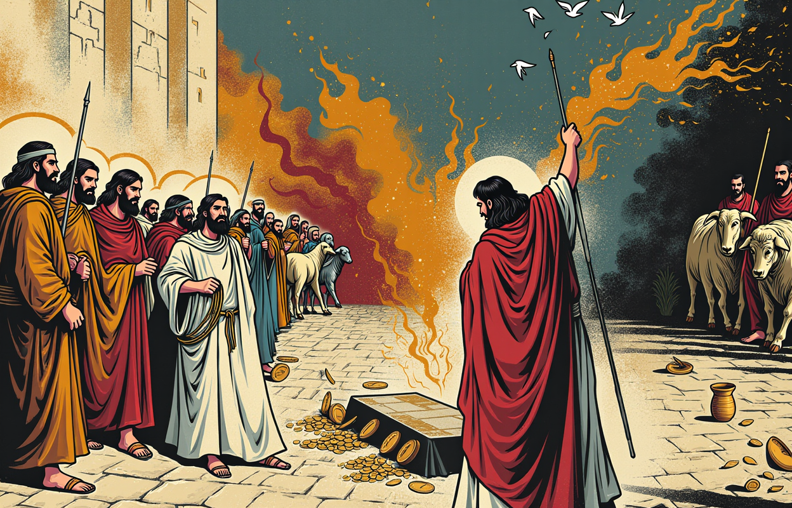
Nach dem Aufruhr: Jesus steht ruhig einer Gruppe von Fragenden gegenüber (würdig, verschiedene Alter, keine Karikatur). Hinter ihnen ragt das helle, goldgesäumte Tempelhaus riesig auf. Jesus legt die Hand auf die eigene Brust – er spricht vom Tempel seines Leibes. Totale: Jesus klein vor der Architektur, aber das hellste Licht liegt auf ihm.
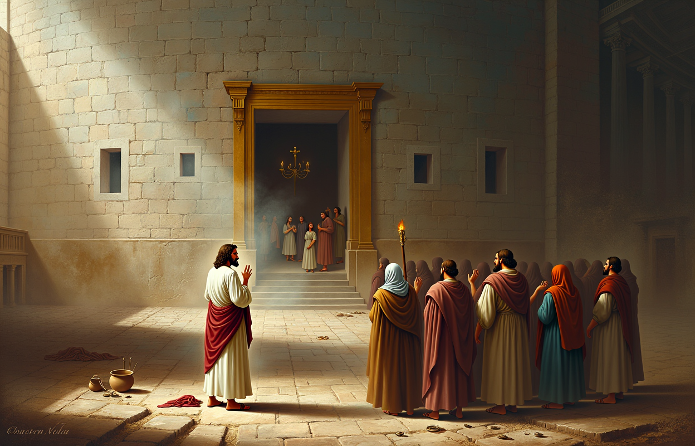